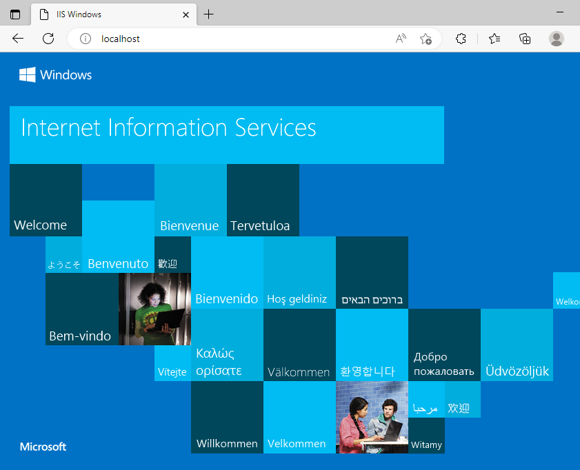

Installing Spira
Available in SpiraTest, SpiraTeam, SpiraPlan
This section outlines how to:
- prepare your system for installation of Spira
- install the software
- ensure that your web-server is correctly configured to ensure secure operation
Hardware and Software Requirements
The minimum hardware and software requirements for running the Spira system are:
| Server Requirements | |
|---|---|
| Requirement | Minimum Specification |
| Processor: | Intel or AMD x86 or x64 compatible processor |
| Memory: | 4 GB, 8 GB recommended |
| Operating System: | Windows Server 2016+ (recommended) Windows Server 2012 R1 & R2 Windows 10 (for demoing) |
| Database: | Microsoft SQL Server 2016+ Microsoft SQL Server 2016+ Express Edition* |
| Web Server: | Internet Information Services (IIS) 7.0 or higher ASP.NET Web Extensions 4.7.2 or higher |
Note: Please consider there are some limitations for FREE SQL Express [That may significantly affect performance thus we don't recommend it to be used on production/handling large amounts of data).
| Client Requirements | |
|---|---|
| Web Browser: | Microsoft Edge Mozilla Firefox Google Chrome (Desktop and Android) Apple Safari (Desktop and iOS) Opera |
| Other Components: | Microsoft Excel 2010+ (optional) Microsoft Word 2010+ (optional) Microsoft Project 2010+ (optional) |
*Note that Spira can be loaded onto either Windows Server or workstation editions, provided that the IIS web-server is installed and that SQL Server is available as a database engine. However, Windows workstation editions can only support a maximum of 5 concurrent user web sessions. In general, unless there are only going to be a couple of client machines hitting the server, we recommend using Windows Server.
System Prerequisites
Assuming that you have already installed the appropriate version of Microsoft Windows onto your computer (or that has been pre-installed for you), make sure that the various prerequisites have been correctly added to your installation before trying to install Spira. The Spira installer will check to ensure that the various prerequisites are in place, and will abort the installation if any are missing, indicating to you what action needs to be taken.
We recommend that you install / configure the prerequisites in the following order:
- Install the .NET Framework v4.7.2
- Install SQL Server 2016+
- Install a modern web browser like Microsoft Edge
- Ensure that IIS is installed
- Ensure that ASP.NET 4.7.2 is enabled
Install the .NET Framework v4.6, v4.7, v4.8
On most modern Windows 11 and Windows Server 2022+ installations, Microsoft .NET Framework v4.7.2 is usually already installed. On earlier operating systems, you may need to manually add the .NET 4.7.2 components to the factory configuration.
To see which version of the Microsoft .NET framework installed please follow the below steps:
- Open the file explorer or press the CTRL + e shortcut keys.
- Browse the following path: C:\Windows\Microsoft.NET\Framework
- Then open the folder showing like: v4.0.30319
- Right-click on any of the .dll files and select the Properties option.
- Select the Details tab.
You can find the version under Product version property. See the below screenshot:

To install the .NET Framework, launch your browser and enter the URL: https://www.inflectra.com/CustomerArea. Once you have logged-in to the customer area, under the "My Downloads" section there will be hyperlinks to download and install the appropriate version of the .NET Framework (version 4.7.2 at time of writing). Click on the option to download and install the .NET Framework, and follow the instructions provided. Once you have completed the install, verify that the installation was successful by looking in the "Administrative Tools" folder as illustrated above. You also need to make sure that .NET 4.7.2 has been installed if necessary.
Install SQL Server version 2016 (or higher)
If you do not have a SQL Server instance ready, you can install the appropriate version of the database software, following the instructions provided with the installation. For basic or trial use, we recommend SQL Server Express Edition. This free version of SQL Server will offer sufficient performance where performance and storage are not important (such as during a trial). SQL Express can be downloaded from either the customer area of our website (http://www.inflectra.com/CustomerArea) or directly from Microsoft's website.
You must setup the built-in SA (SysAdmin) account on SQL Server. Make sure SQL Server setup allows mixed-mode authentication so it allows both SQL Server and Windows logins:
- In SQL Server Management Studio Object Explorer, right-click the server, and then click Properties.
- On the Security page, under Server authentication, select 'SQL Server and Windows Authentication Mode', and then click OK.
- In the SQL Server Management Studio dialog box, click OK, to acknowledge the need to restart SQL Server.
- In Object Explorer, right-click your server, and then click Restart. If SQL Server Agent is running, it must also be restarted.
- In Object Explorer, expand Security, expand Logins, right-click sa, and then click Properties.
- On the General page, you may have to create and confirm a password for the SA login.
- On the Status page, in the Login section, click Enabled, and then click OK.
SA user is required during the installation/upgrade to create the Database and required Logins, and this can be done using a SysAdmin user only.
Ensure you have enabled the Full-Text Indexing feature enabled prior running installer of Spira application.
Ensure that IIS is installed
On Windows Server OS installations, IIS is usually installed as part of the factory configuration, whereas on Windows workstation OS installations, you typically need to manually add the components to the factory configuration. The steps that you need to take to verify its installation are listed below:
- To check if you have IIS installed, click Start > Control Panel > Administrative Tools. Under the "Administrative Tools folder"
- You should see an icon for "Internet Information Services (IIS) Manager"

- If you don't see this icon, then it means that you need to add IIS to your computer
- To install IIS refer to IT System Administrator or
- Follow the instructions from Microsoft official documentation https://learn.microsoft.com/en-us/iis/application-frameworks/scenario-build-an-aspnet-website-on-iis/configuring-step-1-install-iis-and-asp-net-modules
Windows 8, Windows 8.1
On Windows 8 or 8.1, to install IIS, you need to click Start > Control Panel > Programs and Features or type appwiz.cpl in Run, then choose the option to "Turn Windows features on or off". This will bring up the list of features and roles that can be configured on the server:
Windows 10
On Windows 10 and Windows 11, to install IIS, you need to click Start > Control Panel > Programs and Features or type appwiz.cpl in Run, then choose the option to "Turn Windows features on or off". This will bring up the list of features and roles that can be configured on the server:


Make sure that the following features are enabled within the 'Internet Information Services' folder:
-
Web Management Tools
-
IIS 6 Management Compatibility
- IIS Management Console
- IIS Management Service
-
-
World Wide Web Services
-
Application Development Features
- .NET Extensibility 3.5
- .NET Extensibility 4.7.2
- ASP.NET 3.5
- ASP.NET 4.7.2
- ISAPI Extensions
- ISAPI Filters
-
Common HTTP Features
- Default Document
- Directory Browsing
- HTTP Errors
- HTTP Redirection
- Static Content
-
In the same panel ('Turn Windows Features on or off') you also need to check that the following features are enabled in the '.NET Framework 4.6 Advanced Services' folder:

-
.NET Framework 4.6 Advanced Services
- ASP.NET 4.6
-
WCF Services
- HTTP Activation
- TCP Port Sharing
To verify that this IIS is now installed, type "http://localhost" into the browser's address bar. You should see a screen displaying the initial IIS startup page:

Windows Server 2012, 2016, 2019
On Windows Server 2012, 2016, 2019, you need to click on Server Manager, then under the "Roles" heading, choose the option to "Add Role" (Add Roles and Features in Windows Server 2019+) followed by selecting the new role "Web Server (IIS)" or using a PowerShell command Install-WindowsFeature -name Web-Server -IncludeManagementTools
Then click "Next" to bring up the role configuration screen:

Make sure that the following features are enabled:
-
Web Server (IIS)
- Web Server
- Common HTTP Features
- Default Document
- Directory Browsing
- HTTP Errors
- Static Content
- HTTP Redirection
- Web Server
-
Application Development
- .NET Extensibility 3.5
- .NET Extensibility 4.5
- ASP.NET 3.5
- ASP.NET 4.5
- ISAPI Extensions
- ISAPI Filters
-
Management Tools
- IIS Management Console
- IIS Management Service
- .NET Framework 4.5 Features
- .NET Framework 4.5
- ASP.NET 4.5
-
WCF Services
- HTTP Activation
- TCP Port Sharing
Ensure that ASP.NET is installed
Once IIS and .NET are both installed, make sure the Active Server Pages (ASP.NET) components that allow IIS to access the .NET framework are correctly configured. If you installed .NET after IIS, then ASP.NET is typically configured for you. But if you installed IIS afterwards, then further manual steps may be necessary.
To verify that ASP.NET has been correctly configured, click on Start > Control Panel > Administrative Tools > Internet Information Services (IIS) Manager to launch the IIS administrative console:
You should see a section called "ASP.NET" occupying the top third of the IIS screen. If not, then you need to go back to Ensure that ASP.NET is installed and make sure that you chose the option to install ASP.NET when installing IIS.
Installing the Software
Once all of the prerequisites are correctly installed, you are now ready to install Spira. To start and successfully finish the installation you will need the items listed below (all of which are available in the customer area of the Inflectra website):
- The installation package - can be found under "My Downloads" section:
- The name of the organization the software is licensed to
- The license key code
To start the installation, double-click on the Spira installation package (it will have a filename in the form of Spira-vX.X.X.exe). The Installer will display the following dialog box:

Select an Installation Type
Click the "Next" button to start the installation wizard. The wizard will gather information about what you want to do and how you want to do it. Before any changes are made to your system (installing web-server files and database components) you will get a chance to review everything again.

Review the License Agreement and Prerequisites
If installing a fresh installation or upgrading, after making your selection the next screen provides a copy of the Spira End User License Agreement (EULA). Please read this carefully as it describes the legal contract between you -- the user of the software -- and Inflectra Corporation, the developer and publisher. Once you have read the agreement and understood your rights and obligations, select the radio button marked "I accept the terms in the License Agreement" and click the "Next" button.

The next page of the wizard will display a list of the required pre-requisites. The installer does not attempt to verify if these pre-requisites have been met or not. The information is displayed for information purposes only. If a pre-requisite is missing the application may display incorrectly.

License Information
The next stage of the wizard (for installing and upgrading) is to enter license information:

You need to enter:
- the organization that was issued the software license
- the full license key for the relevant version of the software
The installer will verify the license information as you enter it. If the details entered are valid then the information will be displayed beneath the entry fields. This allows you to check that the correct application and license will be installed. On clicking Next, the installer will warn you of any discrepancies, and will not allow you to proceed until valid information has been provided.
If for any reason you are unable to get the provided license key to work, please contact Inflectra customer support for help resolving the issue.
Choose an Installation Location (advanced mode only)
If you checked "advanced" at the start of the installation process, you will have the option to choose where the application is installed. You can choose an existing folder or make a new one and select that. By default it is C:\Program Files (x86)\[Application Name]).
Web Server Configuration

Choose which web site to install Spira into using the available dropdown, which should list all available web sites in IIS on this machine. The Default Web Site will be preselected and is the best option in most circumstances.
Virtual Directory (advanced mode only)
If installing in advanced mode, then on this screen you will able to change the name of the web-site URL that will be used to access the system. By default, users would need to type into their browsers: http://"server name"/[product name]. Should you want to have a different name change the name in the Virtual Directory box, otherwise simply accept the default name and click "Next".
Note: The installer will check to make sure that the name you have chosen is not already in use, and will warn you if it is.
Connect to the Database
Spira has an application (installed into a default folder on your system), a website (configured above), and a database. The next screen tells the installer how to connect to the database server on your system.

a) Windows Authentication
This is the easiest option when the application and database will be residing on the same server. It is the only option available for authentication during a standard installation. In this case, choose the "Windows Authentication" option and the Login/Password boxes will be disabled. In this case, the installer will connect to the database using your current Windows login to create the application database objects, and Spira will connect to the database during normal operation using either the ASPNET or NETWORK SERVICE Windows accounts (it depends on the version of the operating system).
b) SQL Server Authentication (advanced mode only)
This is the easiest option when the application and databases will be residing on different servers across the network. In this case, choose "SQL Server Authentication" under "Connection Information" section and provide SQL Server Login that has full sysadmin permissions -- e.g. the built in System Administrator (SA) account. The installer will use this SysAdmin account to create the database objects. The password for SA account is set in SQL Server itself and should be saved carefully.
Note that using this account for the 'Connection Info' fields is not a security risk as the installer does not remember this login and after the database is created. The credentials are used once and discarded.
With SQL Server authentication, the IIS application pool will run as a low-credentialed system user, typically the 'NETWORK SERVICE' account. This lets the application pool access the local system resources only:
Inside SQL Server SpiraPlan will use a dedicated login (called "SpiraPlan" by default, created automatically) for normal application operations. The username should not be changed as it is required by the application for it to operate.
Setting the Correct Server Instance
In the "Server" box, you need to enter the name of the Microsoft SQL Server instance that is running on your system; the installer will default it to the hostname of the server (which in many cases will be correct). The easiest way to find out the database server name is to:
- open up the SQL Server Administrative console (typically by clicking Start > Programs > Microsoft SQL Server > Enterprise Manager) and look for the name of the server or
- open SQL Management Studio -> Object Explorer
For SQL Server Express edition installations, the Server name is usually the name of your computer followed by "\SQLEXPRESS", so for example, if your computer is called MyComputer, the server name would be MyComputer\SQLEXPRESS or simply use .\SQLEXPRESS (Omitting the second part (called the instance name) would lead to a "host not found" error):
You can also choose whether to install the sample products or not - typically we recommend installing the sample products for evaluation installations and excluding them for production installs.
Complete the Installation
Once you have entered the various pieces of information, click "Next". The installer will attempt to connect to the database using the provided information, and it will display an error message if any of the information is incorrect. Assuming the information is correct, the following screen will be displayed:

Once you have confirmed that everything is correct, click the "Install" button to actually begin the process of installing Spira onto your system. The installer will then display a progress bar as the installation proceeds. Once the installation is complete, the installer will provide confirmation, or display information about any problems it encountered.
Click the "Finish" button to complete the installation.
Congratulations! You have successfully installed Spira onto your system. If you type http://localhost/SpiraPlan into your browser you should see the Spira login page. If for any reason you don't see the login page, please contact Inflectra support team.
Upgrading
You can upgrade any Spira version that is 5.4.0.4 or newer using the latest installer (for instance you can upgrade from 5.4 to 7.7, or from 6.9.0.1 to 7.7 using the exact same installer exe). To upgrade from versions older than 5.4.0.4 you first need to upgrade to 5.4.0.4 and then upgrade to the latest version.
For example, to upgrade from Spira v2.3.1 to v5.4, you would first upgrade from Spira v2.3.1 > v3.2, then upgrade from Spira v3.2 > v4.2, next step is to upgrade from v4.2 > 5.4
To upgrade an existing installation:
- Download the latest version of the installer exe application from your Customer Area
- Run the installer on the machine the application is on
- On the Installation Type screen, select the "Upgrade" button and follow the steps below
Review the License Agreement and Prerequisites
The next screen provides a copy of the Spira End User License Agreement (EULA). Please read this carefully as it describes the legal contract between you -- the user of the software -- and Inflectra Corporation, the developer and publisher. Once you have read the agreement and understood your rights and obligations, select the radio button marked "I accept the terms in the License Agreement" and click the "Next" button.
The next page of the wizard will display a list of the required pre-requisites and whether the installer could find them or not. The checks here are not fool-proof (in particular where a question mark is shown) so it is recommended to manually check the prerequisites in full as described above. The system will not require all prerequisites to be met before allowing the installation, but the application may display incorrectly if any are missing.
License Information
The next stage of the wizard is to enter license information:
You need to enter:
- the organization that was issued the software license
- the full license key for the relevant version of the software
The installer will verify the license information as you enter it. If the details entered are valid then the information will be displayed beneath the entry fields. This allows you to check that the correct application and license will be installed. On clicking Next, the installer will warn you of any discrepancies, and will not allow you to proceed until valid information has been provided.
If for any reason you are unable to get the provided license key to work, please contact Inflectra customer support for help resolving the issue.
Upgrade location
The installer points the upgrade to the default installation location for the licensed version. If this is not correct, click the folder icon to select the proper installation location.
After verifying the location, the installer will display the screen that shows the summary of actions to be performed. Confirm to proceed with the upgrade.
In case of problems, a backup of the existing database is made when upgrading. The backup can be manually selected to ensure safety of the current database. The location is given on the summary screen, and is usually the default backup directory for SQL Server.
To recover your system, restore the backup over top of the existing corrupted database. You can then try the upgrade again.
If problems persist, please contact the Inflectra support team, and they will explain how to retrieve the logs for remediation.
Advanced Install Scenarios
There may be a few cases where you need to customize the installation or upgrade of Spira. To enable the installer's advanced mode, make sure to check the "Advanced" checkbox at the relevant screen of the wizard.
Including the options listed above with "(advanced mode only)" next to them, Advanced mode lets you:
- Choose an installation location during installs
- Specify the virtual directory during installs
- Use SQL Server Authentication instead of Windows authentication
- Adding a new application server in a cluster of load-balanced servers (explained below)
- Upgrading a database to the current release (explained below)
SQL Server authentication details
Without a UserId/password listed in your connection string, Windows Authentication is used (the default). When asked for the username/password under "Connection Info", that user needs to be a SQL Account that is a sys admin, since the database and logins are going to be created. The database user is listed under 'Database settings', and should be left as their defaults as the installer sets and creates those automatically.
The 'sa' account is a built-in SQL account ('system admin'), and the password is usually set in SQL Server itself. Note that you can use this under the 'Connection Info' part of the installer. Please note that the installer does not remember this login after the database is created.
Leave 'Database Settings' section unchanged, as filled by default (make sure the Database name is the actual database you'd like to upgrade).
Adding An Application Server
Use this option when you already have another application server and database server configured and operational. Installation is very similar to a standard installation normally. However, when the page about the SQL Server and Database is displayed, it requires you to point to the existing SQL Server and Database.

All other actions during this install matches those in a standard installation.
Upgrading an existing Database
Use this option in two rare cases:
- where an application was upgraded but the installer did not upgrade the database
- if so instructed by the Inflectra support team
These steps in this option are the same as if you were upgrading the application normally. You will be asked for the SQL Server and Database information for your database.
Once the installer connects and verifies the version of the database to be installed, you will be prompted with an additional Options screen with two options:
- Database Backup Options: will let you reconfigure whether and where a backup of the database is created.
- Stop IIS Process: will stop the IIS process during upgrade. In some cases this may be necessary in case IIS has a lock on the database that prevents it from being modified.
Security Considerations
The Microsoft Internet Information Services (IIS) web-server and SQL Server database are powerful tools to managing web-based applications. However it is important to make sure that they are correctly secured to prevent unauthorized access to applications being hosted on them. This is a fast-changing field and beyond the scope of this guide to address, however we recommend reading the following article for details on how to secure IIS:
http://www.iis.net/learn/manage/configuring-security
In addition to the steps outlined in this article, it is important to note that by default, all web pages served by IIS using the HTTP protocol are unencrypted, and as such, the usernames and passwords used by Spira to log into the application can be read by network sniffing tools. If you are using Spira purely within an intranet environment, this may not be an issue. However, if you are externally hosting Spira onto a publicly accessible website, we recommend installing a Secure Sockets Layer (SSL) encryption certificate, and restricting all web-traffic to the secure HTTPS protocol instead.
Troubleshooting
Every time the installer attempts an operation (like an install or upgrade), it stores a log file. This is located at "c:\ProgramData\Inflectra\SpiraPlan". Each log file is labelled with the date and time of the operation. Please share the relevant files with the Inflectra support team if you need help troubleshooting the required operation.